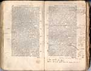
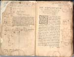
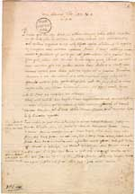
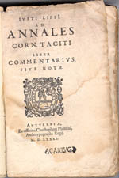
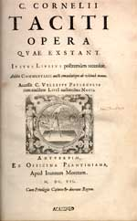

Justus Lipsius 1606 – 2006
Samenstelling: Jeanine de Landtsheer en A.Th. Bouwman
De webpresentatie behandelt de volgende onderwerpen:
5. Lipsius en de klassieke filologie: Tacitus
Nadat Lipsius in Keulen was opgeleid tot ‘bachelor of arts’ (1564) vervolgde hij zijn studie in Leuven. Hij schreef er zich in als student rechten maar volgde ook de colleges Latijn van Cornelius Valerius aan het beroemde Collegium Trilingue. Nog in zijn studententijd voltooide hij zijn Variarum lectionum libri IV, een verzameling korte hoofdstukjes met verbeteringen en aantekeningen bij allerlei Latijnse auteurs. Toen het werk in 1569 door Plantijn gedrukt werd, bevond Lipsius zich in Rome, waar hij zich bijna twee jaar onder-dompelde in de klassieke literatuur en oudheid. Hij verzamelde er onder meer materiaal voor zijn eerste Tacitus-editie uit 1574, die groot respect afdwong bij zijn tijdgenoten. Zijn leven lang bleef Lipsius de teksten van deze grote Romeinse historiograaf bestuderen, emenderen en commentariëren.
|
5.1 || C. Corn. Tacitus, Historiarum et Annalium libri qui
exstant. Ed. J. Lipsius. Antwerpen: C. Plantijn, 1574. [760
F 11]. –– In 1574 publiceerde Lipsius zijn eerste kritische uitgave van Tacitus’ Historiae en Annales, waarmee hij in één keer zijn naam als klassiek filoloog vestigde. |
|  |
5.2 || J. Lipsius, Epistolicarum quaestionum libri V, in quis ad varios scriptores, pleraeque ad T[itum] Livium notae. Antwerpen: C. Plantijn 1577. [766 D 6]. –– In 1576 voltooide Lipsius een reeks emendaties bij klassieke auteurs, o.m. Tacitus, Seneca en vooral Livius. Ze werden een jaar later gepubliceerd in de vorm van een aantal (fictieve) brieven gericht aan vrienden en geleerde kennissen. |
|  |
|
5.3 || Brief van Josias Mercier aan Lipsius, gedateerd 19 maart 1581. [BPL 1886]. –– Mercier had vernomen dat Lipsius bezig was met een uitgebreid inhoudelijk commentaar op Tacitus en zond Lipsius daarom een aantal tekstkritische aantekeningen betreffende deze auteur. |
|  |
5.4 || J. Lipsius, Ad Annales Corn.Taciti liber commentarius sive notae. Antwerpen: C. Plantijn, 1581. [760 G 9]. –– Ook na de publicatie van zijn Annales-commentaar blijft Lipsius druk bezig met Tacitus. Dit handexemplaar bevat vele autografe notities, grondstof voor latere edities van Tacitus’ werken. |
|  |
5.5 || C. Cornelii Taciti Opera quae exstant. Ed. J. Lipsius. Antwerpen: J. Moretus, 1607. [762 B 5]. –– De laatste door Lipsius gecorrigeerde editie dateert van 1607. Zij werd postuum bezorgd door Johannes Woverius, oud-leerling en executeur-testamentair van Lipsius. |
|  |
| vorige pagina | volgende pagina |